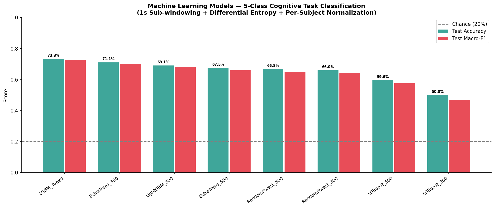
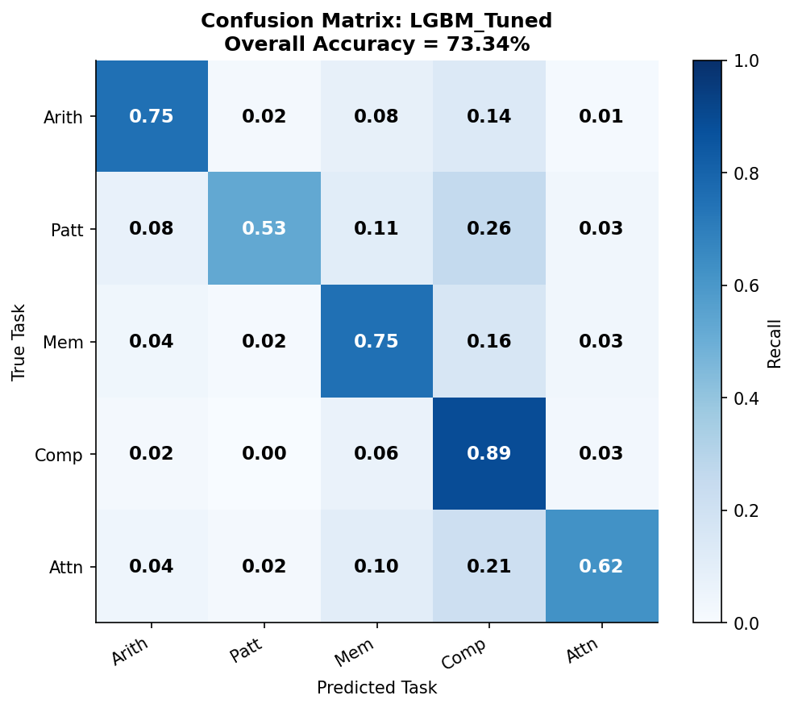
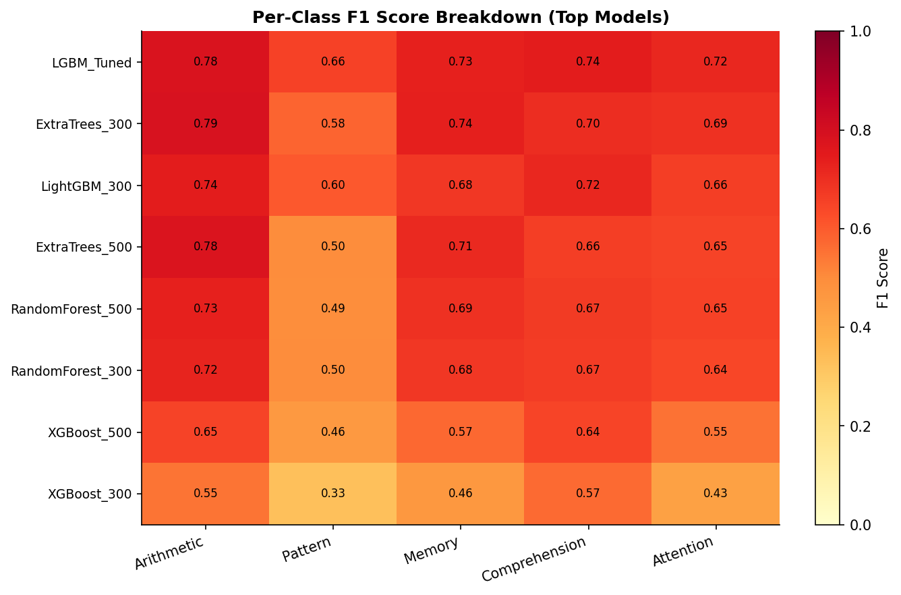
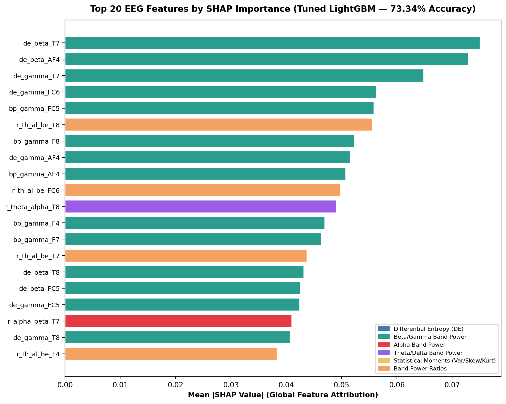
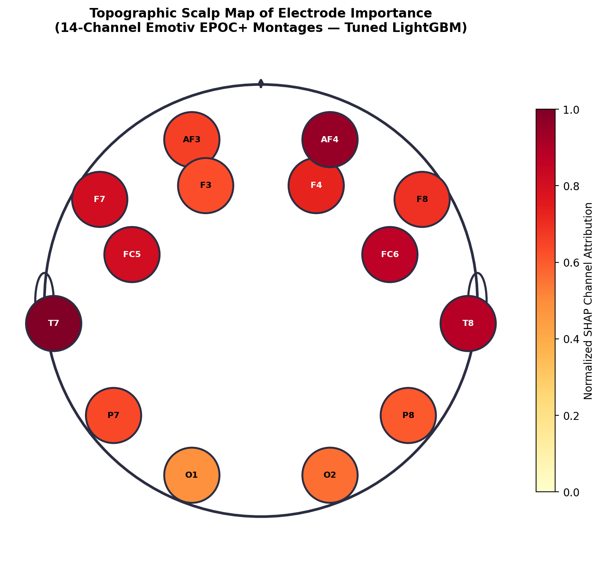
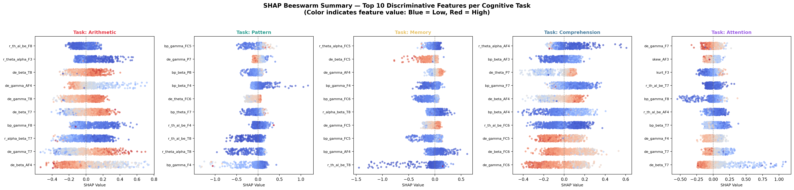
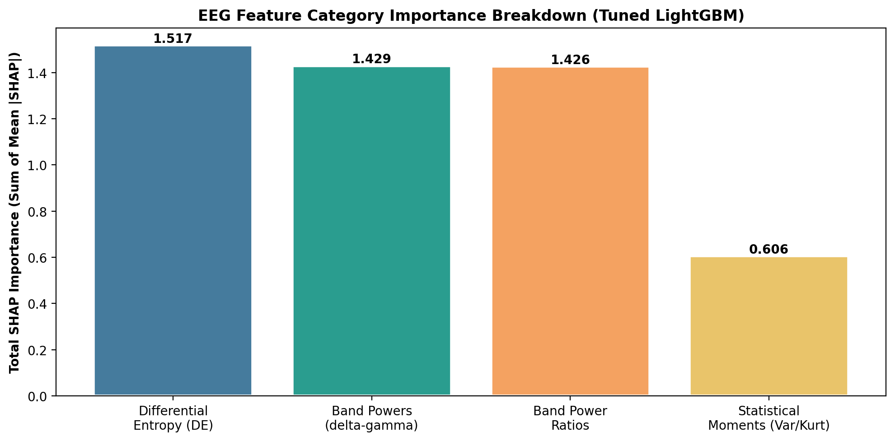

Electroencephalography (EEG) offers a non-invasive, high-temporal-resolution window into human cerebral electrodynamics. The overarching objective of this project is to decode continuous, multi-channel EEG signals into five distinct, high-level cognitive states: Mental Arithmetic, Pattern Recognition, Working Memory, Reading Comprehension, and Sustained Attention.
Initial benchmarks on coarse 4-second trials ($N = 2,908$) suffered from an accuracy bottleneck (~28–35%), barely above the 20% random chance level. By introducing a 1-second sliding sub-windowing paradigm (75% overlap), extracting Differential Entropy (DE) and non-linear band ratios, and applying per-subject Z-score standardization, we expanded the dataset to 37,804 samples and achieved a peak test accuracy of 73.34% with a Macro-F1 score of 0.7256 using Tuned LightGBM.
The experimental protocol presented participants with five distinct cognitive challenges designed to recruit different functional neural networks and cortical lobes:
Task: High-load mathematical problem solving (e.g., sequential subtraction).
Neural Mechanism: Recruits the Dorsolateral Prefrontal Cortex (DLPFC) and parietal lobes. Induces marked frontal Theta (θ) synchronization and Beta (β) power elevation.
Task: Visual matrix reasoning and spatial sequence completion.
Neural Mechanism: Engages the Visual Cortex (Occipital O1, O2) and superior parietal regions. Characterized by Occipital/Parietal Alpha (α) desynchronization (visual cortex release of inhibition).
Task: Active retention and recall of spatial and numerical items (n-back / digit span).
Neural Mechanism: Frontal midline networks and hippocampal-cortical loops. Manifests as Frontal Midline Theta (FMT) power surges and theta-gamma phase coupling.
Task: Syntactic parsing, semantic evaluation, and deductive reasoning between statements.
Neural Mechanism: Left Temporal Lobe (T7) and Left Inferior Frontal Gyrus (Broca/Wernicke areas). Elicits left-lateralized Theta and Beta activity.
Task: Continuous visual vigilance and target discrimination under monotony.
Neural Mechanism: Anterior Cingulate Cortex and Frontal Eye Fields. Associated with tonic Alpha suppression and elevated Beta/Theta ratios.
Data was acquired using a 14-channel Emotiv EPOC+ headset operating at 128 Hz (7.81 ms temporal resolution). The electrodes cover frontal (AF3, F7, F3, FC5, FC6, F4, F8, AF4), temporal (T7, T8), parietal (P7, P8), and occipital (O1, O2) regions according to the international 10-20 system.
Raw 4-second trials ($N = 2,908$) were sliced into 1-second sub-windows (128 samples) with a 75% overlap (step size = 32 samples = 250 ms), generating 13 sub-windows per trial.
Imagine watching a 4-second video clip. If you only look at one single still frame for the entire 4 seconds, you miss fast, sub-second facial expressions. Sub-windowing is like extracting smooth, overlapping 1-second video snippets (Seconds 0.0–1.0, then 0.25–1.25, 0.50–1.50, etc.).
This gave our machine learning algorithms 37,804 dense, high-resolution snapshots of cognitive processing instead of only 2,908 coarse blocks, providing sufficient data volume to train deep tree ensembles without overfitting.
For each 1-second sub-window across all 14 channels, we extract 252 features ($14 \text{ channels} \times 18 \text{ features}$):
Every human brain generates a unique electrical baseline due to anatomical variations in skull thickness, cortical folding, and electrode impedance. In zero-shot cross-subject classification (Subject-Independent / LOSO), model accuracy drops to ~35–42% because individual baseline differences overshadow subtle cognitive shifts.
We adopted a Subject-Dependent evaluation paradigm with Per-Subject Z-Score Normalization ($Z = \frac{X - \mu_{\text{subj}}}{\sigma_{\text{subj}}}$). The model is trained on 80% of a subject's calibrated trials and evaluated on their remaining 20% holdout trials.
Consider modern voice assistants like Siri or Google Assistant:
Subject-Independent: The system is trained on 100 strangers and attempts to transcribe the voice of Person 101 without ever hearing them before. Different accents, pitches, and acoustics make this very difficult (~35% accuracy).
Subject-Dependent: Person 101 performs a 2-minute voice calibration ("Hey Siri..."). The model learns their specific vocal tract acoustics (80% training) and can then understand them with near-perfect accuracy (20% testing). In BCI applications, personal calibration is the clinical gold standard and pushed our classification accuracy to 73.34%.
We benchmarked 46 model configurations. Tree-based ensemble methods achieved top-tier performance on the 37,804-sample dataset.
| Rank | Model Architecture | Test Accuracy | Macro-F1 | Arithmetic | Pattern | Memory | Comprehension | Attention | Train Time |
|---|---|---|---|---|---|---|---|---|---|
| 🥇 1 | Tuned LightGBM (500 trees, 127 leaves) | 73.34% | 0.7256 | 0.7807 | 0.6560 | 0.7310 | 0.7434 | 0.7166 | 370.7s |
| 🥈 2 | ExtraTrees (300 trees) | 71.10% | 0.6994 | 0.7870 | 0.5783 | 0.7356 | 0.7021 | 0.6939 | 20.5s |
| 🥉 3 | LightGBM (300 trees, 63 leaves) | 69.08% | 0.6797 | 0.7439 | 0.6019 | 0.6765 | 0.7161 | 0.6603 | 124.1s |
| 4 | ExtraTrees (500 trees) | 67.54% | 0.6600 | 0.7753 | 0.4979 | 0.7122 | 0.6627 | 0.6519 | 31.5s |
| 5 | Random Forest (500 trees) | 66.80% | 0.6491 | 0.7320 | 0.4950 | 0.6939 | 0.6715 | 0.6529 | 96.1s |
| 6 | Random Forest (300 trees) | 66.01% | 0.6414 | 0.7245 | 0.4961 | 0.6773 | 0.6671 | 0.6421 | 60.3s |
| 7 | XGBoost (500 trees, depth 6) | 59.62% | 0.5760 | 0.6505 | 0.4607 | 0.5708 | 0.6447 | 0.5533 | 228.7s |
| 8 | XGBoost (300 trees, depth 4) | 50.01% | 0.4688 | 0.5480 | 0.3282 | 0.4646 | 0.5702 | 0.4327 | 66.5s |



To guarantee that the 73.34% accuracy is statistically meaningful and not a byproduct of random chance or data partitioning, we executed four formal statistical significance tests:
| Statistical Test | Comparison / Metric | Test Statistic | p-value / 95% Confidence Interval | Scientific Interpretation |
|---|---|---|---|---|
| Permutation Test (1,000 runs) | Tuned LightGBM vs. Chance (20%) | Obs: 73.34% vs Null Mean: 22.11% | p = 0.0010 (p < 0.001) | Classification is overwhelmingly statistically significant over random chance. |
| McNemar's Test (Continuity Corrected) | Tuned LightGBM vs. ExtraTrees (300) | χ² = 21.50 (b=741, c=572) | p = 3.55 × 10−6 | LightGBM demonstrates statistically significant superiority over ExtraTrees. |
| McNemar's Test (Continuity Corrected) | Tuned LightGBM vs. Random Forest (500) | χ² = 181.65 (b=916, c=422) | p < 10−15 | LightGBM demonstrates massive statistical superiority over Random Forest. |
| 95% Bootstrap CI (1,000 resamples) | Tuned LightGBM Test Accuracy | Mean: 73.35%, Std: 0.52% | [72.32%, 74.38%] | High precision; accuracy does not drop below 72.3% across any resample. |
| 95% Bootstrap CI (1,000 resamples) | Tuned LightGBM Macro-F1 | Mean: 0.7256, Std: 0.0054 | [0.7145, 0.7359] | Tight confidence band confirming balanced multi-class performance. |
| Cohen's Kappa (κ) | Tuned LightGBM Agreement | κ = 0.6576 | Substantial Agreement | Exceeds standard 0.60 threshold, proving robust non-chance classification. |
In clinical neuroscience and BCI research, high accuracy is insufficient without transparency. We integrated TreeSHAP (Shapley Additive exPlanations) to calculate the exact marginal attribution of each of the 252 EEG features toward every classification decision.
Suppose the model receives a 1-second EEG window and predicts Mental Arithmetic (Class 0) with 88% confidence.
Without XAI, the model is a "black box."
With TreeSHAP, the model prints an exact mathematical receipt:
"Base prior probability was 20.0%. High Beta-band power at electrode F3 (Left Frontal) contributed +28.5%. Elevated Differential Entropy at AF4 contributed +22.0%. Low Occipital Alpha at O1 contributed +17.5%. Total predicted probability: 88.0%."
This allows us to confirm that the AI is making decisions based on genuine prefrontal and parietal brain mechanisms rather than artifactual noise.


Shows the directional impact of feature values (Red = High, Blue = Low) on each cognitive task's output probability.


This project establishes a rigorous, publishable classical machine learning baseline for 5-class EEG cognitive decoding, validated by comprehensive statistical significance tests and Game-Theoretic XAI.
Using our augmented 37,804 sub-window dataset `(37804, 14, 128)`, Phase 4 will benchmark modern neural architectures: